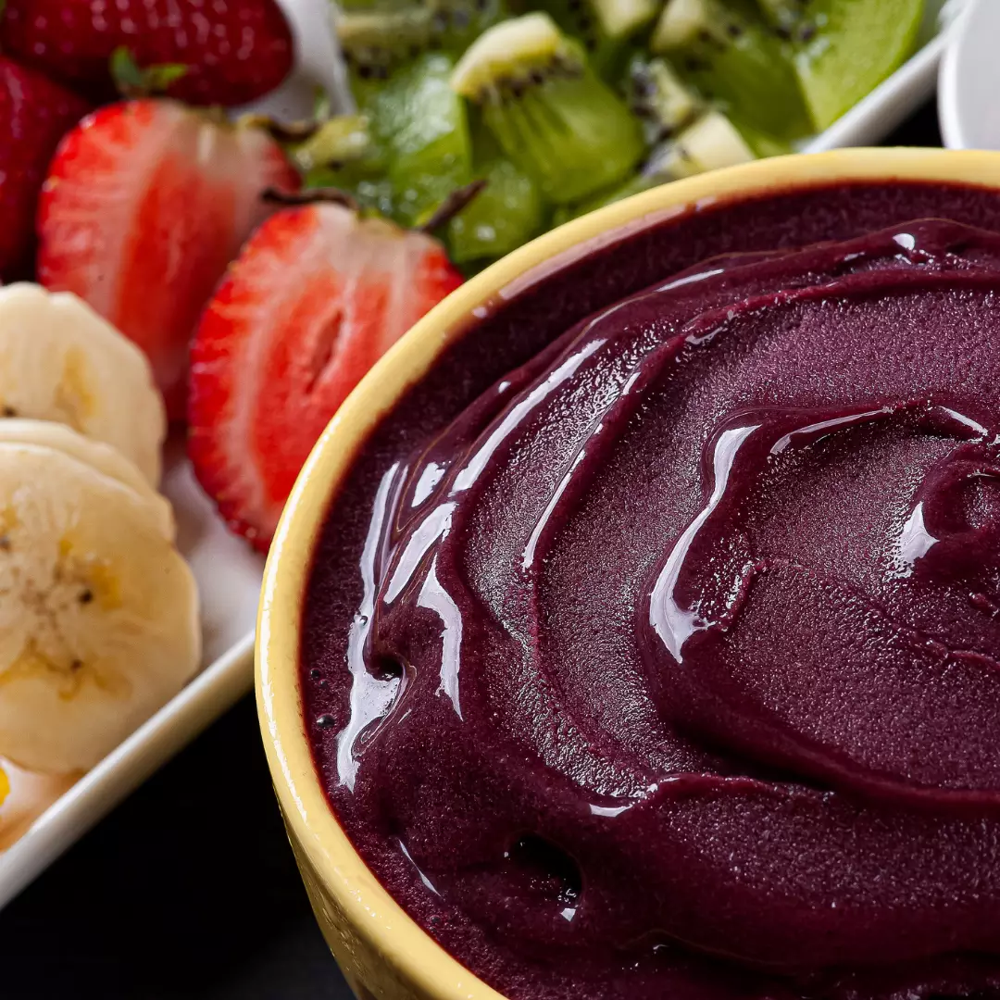
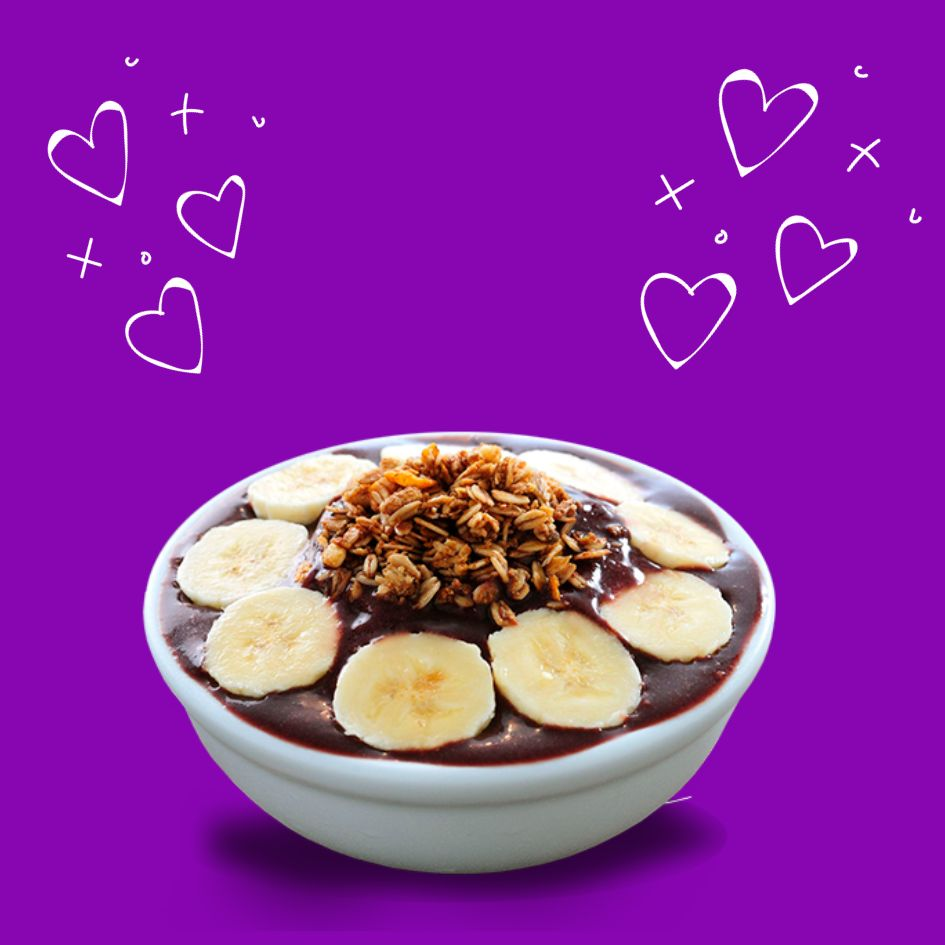
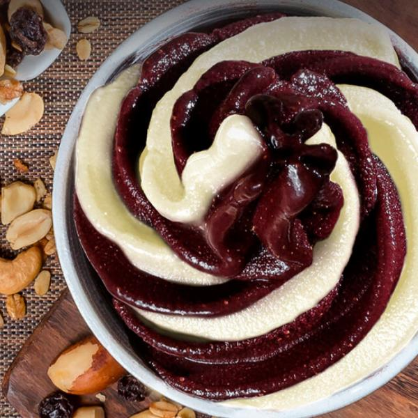
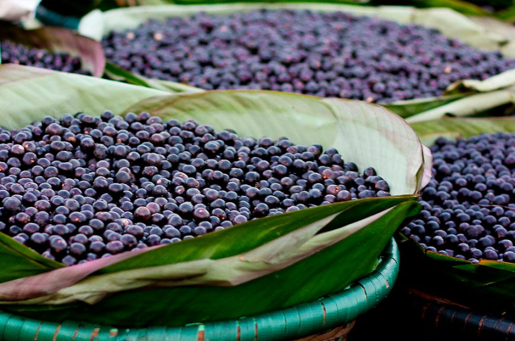
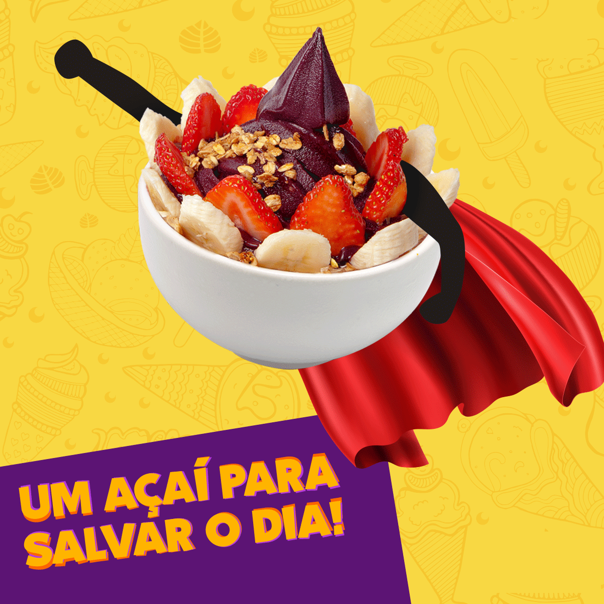

No Açaí do Rosa, estamos comprometidos em trazer a você o melhor açaí, colhido diretamente das florestas tropicais da Amazônia e preparado com todo o cuidado para manter sua frescura e sabor incomparáveis.
Não é à toa que o açaí do rosa é considerado o melhor produto em aceitação do mercado


Com os melhores produtos e igredientes selecionados para que haja a melhor experiência para você
Com a maior diversidade de sabores em nossos produtos mais vendidos


Com a Origem Amazônica, o açaí (Euterpe oleracea) é uma palmeira nativa das florestas tropicais da região amazônica, principalmente no Brasil.
O açaí é frequentemente chamado de superfruta devido à sua alta concentração de antioxidantes, fibras, vitaminas e minerais.
